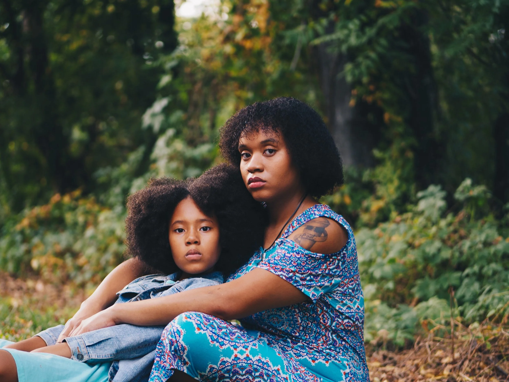
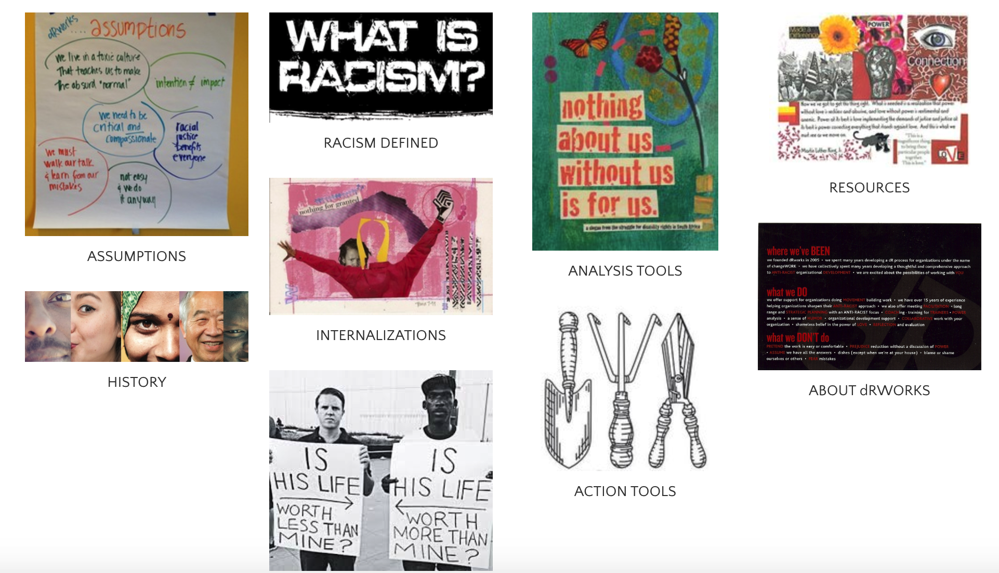
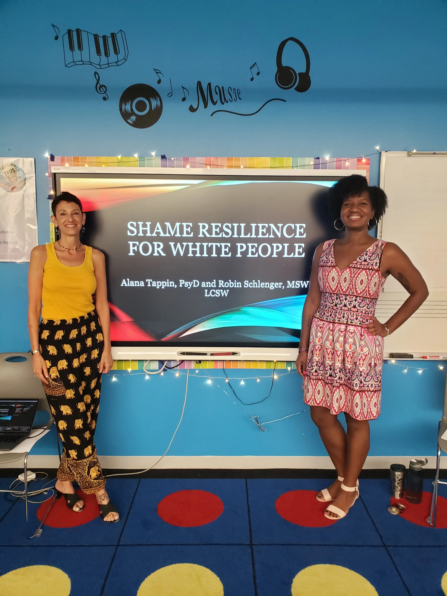
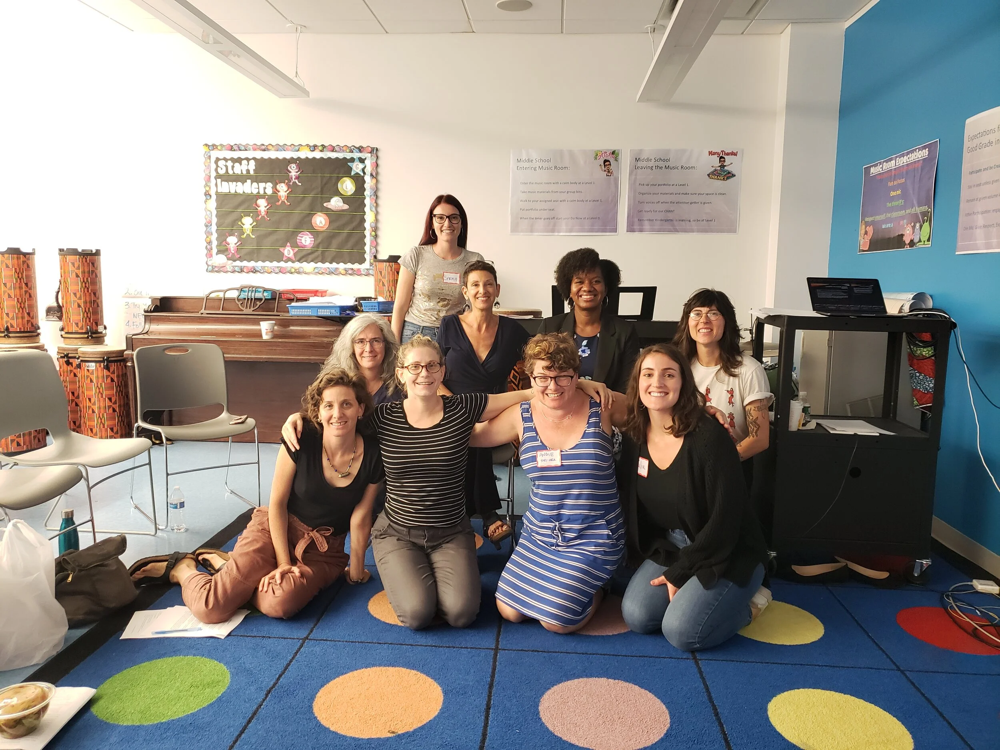

2019-10-24
Falling Down Getting Back Up Doing It Over And Over Again
When it comes to being an antiracist white person, I often feel like I’m still an infant learning to walk. There is still so much I don’t see, don’t know and can’t even imagine. As I have found in most areas of my life, the more you teach the more you learn and the more you share, the more you get back. So as I look back today to even 3 years ago, I am amazed at who I have become, what I have learned, who I’ve learned from and who I have had the pleasure to collaborate with. I know that I have a life long journey ahead of me. The work of dismantling racism and white supremacy is daunting and for this reason, it is so important to be in community and to be accountable to each other and People of Color. That is why I continue to share these resources and my experiences with all of you. I look forward to learning with you.
See you on the journey!
-Robin
Article

The PhD in Racism Black People Receive from This Country
It’s a degree we can live without
By: Lecia Michelle
A few years ago, I started co-facilitating a workshop about the impact of race in supervision. I co-created and facilitated the first one with a friend who is a woman of color. During that workshop, I told the group that none of us were experts in the area of race and my friend not so gently corrected me by saying, “I am.” I checked my fragility, apologized and said, thank you for naming that! Unlike People of Color who had no choice but to get their “PhD’s in racism” in order to survive, most of us white folks are still in Pre-K. We have a lot of work to do, and a lot of muscle to build. This article reminded me of that workshop several years ago as well as the importance of respecting the lived experiences of People of Color if we want to graduate to grade school.
Link to article: https://medium.com/our-human-family/the-phd-in-racism-black-people-receive-from-this-country-4311cd6ad23f
Workbook

“White Supremacy Culture" by Tema Okun, dRworks
Link to website: www.dismantlingracism.org
I have used material from this workbook in workshops and trainings and I am not always met with warmth and thanks. The authors provide very detailed and clear examples of the manifestations of white supremacy culture, how they show up and even some suggested antidotes. I continue to recognize so many of these manifestations in myself and in the values of organizations that I have worked in and still work with. When I first started to learn about white supremacy culture, it was extremely disorienting and I found myself getting very defensive as do many white folks in the organizations that I work with. One of the most common things I hear is, “but this is the way we always do things and its working well.” To which I reply, “Yes, it works very well to hold up white supremacy culture.” One of the things that took me a while to understand is that it’s not about right or wrong, but about centering whiteness above all else and holding others to that standard with dire consequences for not conforming. Keep that in mind when you’re reading this if you find yourself getting defensive.
Website
I found this website when I was searching for The White Supremacy Culture Workbook. It’s full of wonderful resources.
Video
Embedded media (requires internet): //www.youtube.com/embed/riVAuC0dnP4?feature=youtu.be&wmode=opaque&enablejsapi=1
Birth of a White Nation by Jacqueline Battalora
(36 minutes and well worth your time!)
Link to video: https://www.youtube.com/watch?v=riVAuC0dnP4&feature=youtu.be
I have been in and facilitated many workshops that have talked about the invention of race as a social construct and whiteness. At this point, I have a good understanding of the social and scientific impact, but there is always room for deepening that understanding and taking in multiple perspectives. My friend found this video when we were putting together our workshop on shame resilience skills for white people. She said, “I finally found a good synthesis of the origin of white supremacy in the U.S.” The presenter is a lawyer and succinctly presents the laws that were very INTENTIONALLY created to build a country for white people. Rather than trying to summarize her talk, for the workshop we co-facilitated we decided to just show the video.
Call to Action
Supervision with An Antiracist and Anti-Oppressive Lens
I have been providing clinical supervision to other mental health providers and school counselors for many years. As a white woman working with nonprofits, I recognized that I was supervising a lot of white clinicians and in turn these clinicians were by in large, working mostly with children and families of color. Until I started to do my own work around race and identify, I didn’t’ see the harm that we were causing to the communities of color that we served. Now that I have fewer blind spots, I am trying to do something to minimize the harm that I and other white clinicians cause to communities of color. I started providing clinical supervision with an antiracist and anti-oppressive focus. I offer individual and group supervision (in-person and virtual). I have come to realize that part of my accountability in dismantling racism is to work and organize with other white people.
Take a look at my website below and feel free to give me a call to talk.
https://robinschlengerlcsw.com/supervision
September’s Workshop


The brilliant Dr. Alana Tappin and I just co-facilitated our second Shame Resilience for White People Workshop from September 28th-29th. We had an amazing group of white folks that fully showed up and pushed deeply into their discomfort. It was heartwarming to see the honesty and vulnerability that was shared. We are looking forward to taking this on the road to as many white people as possible. We believe that understanding, identifying and working through shame is the only way that white people can truly heal so that they can show up authentically and be REAL co-conspirators in dismantling white supremacy.
Here are just a few words of feedback from participants:
“Words can’t even begin to describe my gratitude for this powerful and healing workshop. I’m inspired, hopeful and determined, my heart feels fuller having tools and community to challenge racism.”- Lydia M.
“It's not about completely shifting someone's ideas at the moment or 'winning' the argument--it's about widening my own 'tolerance window' for conversations about race and supporting others to do the same.” - Sarah C.
If you or your organization is interested in engaging in this work please contact me at robin.schlenger@gmail.com.